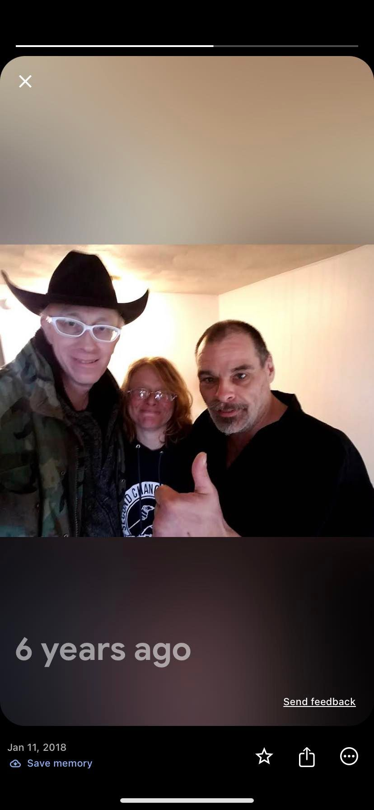

Mobile uploads
6 years ago today this couple moved into their apartment from our tent village.
I’m sorry. But I can’t remember their names now. (thanks to a commenter, I learned their names are Art and Lisa.)
They were on it. They got all their identifications and paperwork. They went to all the required meetings. And they kept on me to help them move their stuff to their new apartment (no easy task).
I can show you the worst of humanity and the best of humanity just by scrolling through my Google photo memories. What I choose to show you on any given day has more to do with how I’m emotionally feeling when I wake up than anything else.
It all exists simultaneously. All at once. The worst and the best.
Why? Why is it like this? Why is it so bad and so good? Is it only so good BECAUSE it is so bad?
Why are we forced to deal with all this?
What is the point?
It feels so exhausting sometimes and so exhilarating other times.
For my own mental wellbeing, I’ve developed my own belief system. I have concocted a pseudo reincarnation system in my mind. I don’t believe all our energy moves entirely from one being to another being. I believe we die and our energy disperses into the cosmos and enters many new plants and creatures.
I currently believe that our experiences, good and bad, are part of a training ground to make us all better. When one of us suffers we all suffer. When one of us celebrates we all celebrate. But it’s all to make us more compassionate and understanding and caring for this magnificent thing we call Life.
I believe we are in the School of Life. And it is all important and beautiful and necessary.
I also believe that it doesn’t matter what I believe. Whatever gets you through the day is all that matters. But for some reason, getting through the day is important. Universally important. Follow whatever spiritual practice makes sense to you and makes you happy. It’s just a tool to help make sense of this mess.
But I truly believe there is a One. A “God” for lack of a better word. A purpose.
We get up. We suffer. We laugh. We love. We hate. And it all matters. It’s all critically important. Each and every one of our experiences are critically important. For some reason I believe the fate of the universe depends on it.